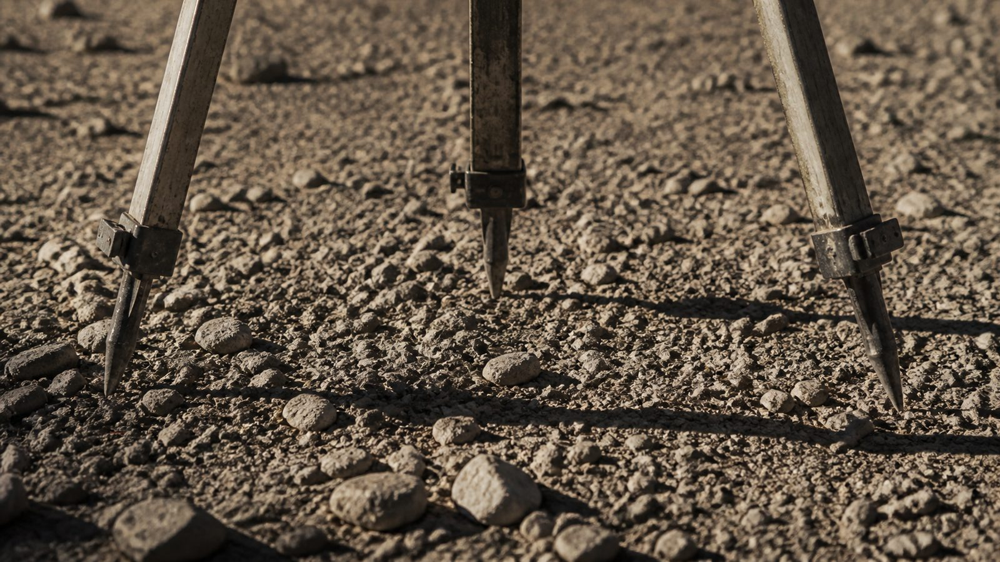
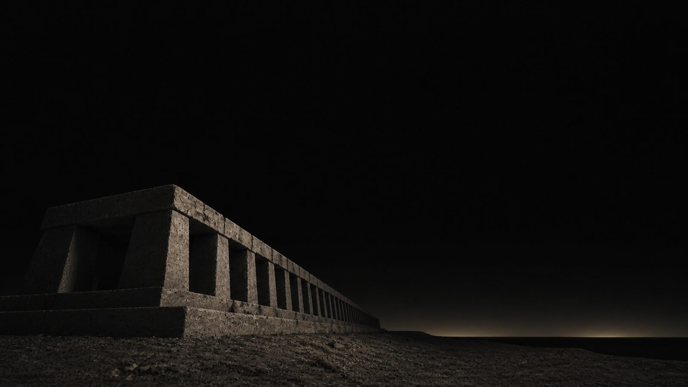
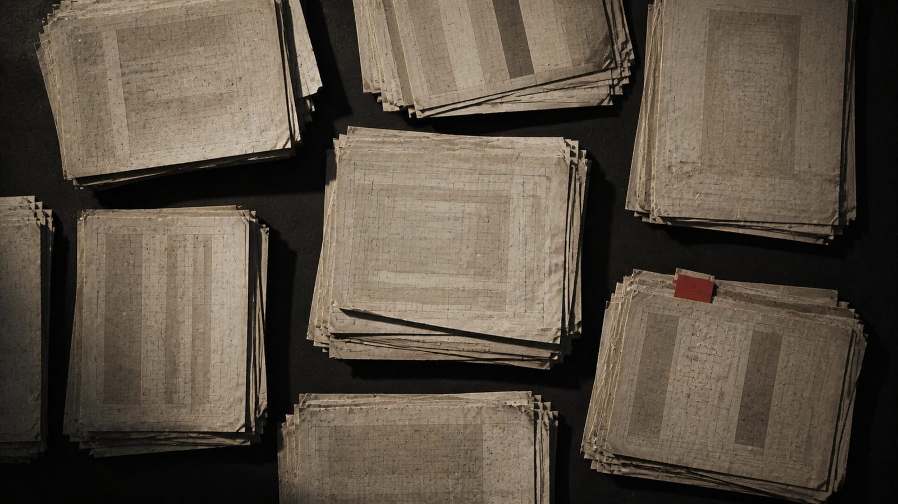
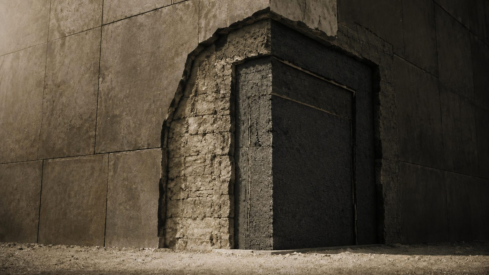
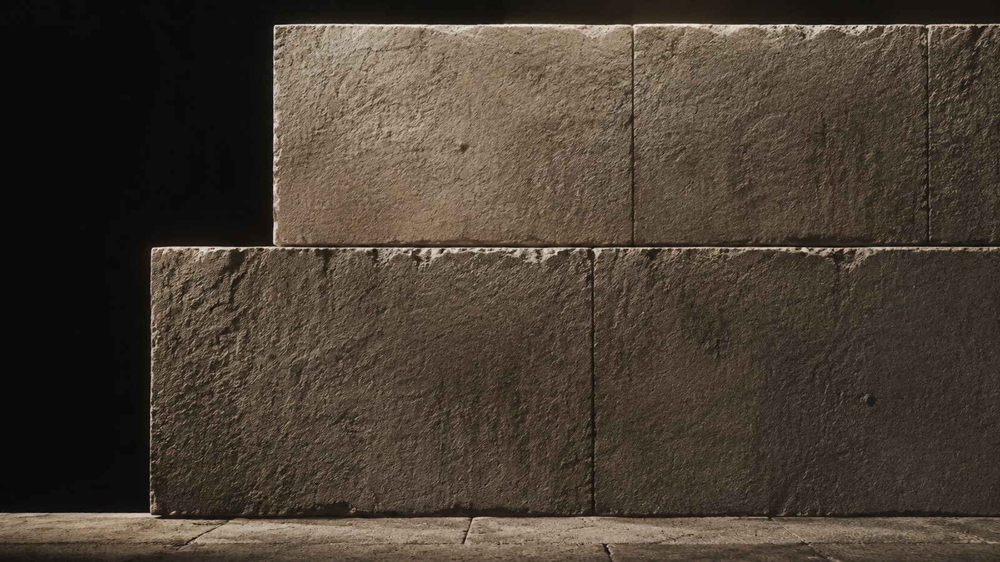
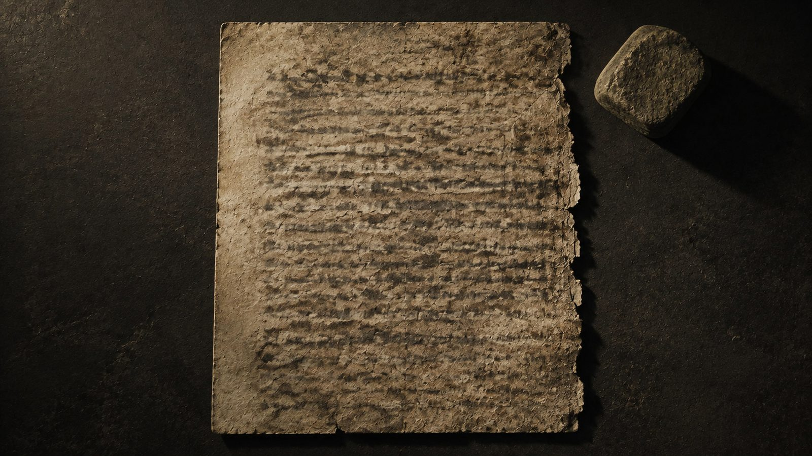
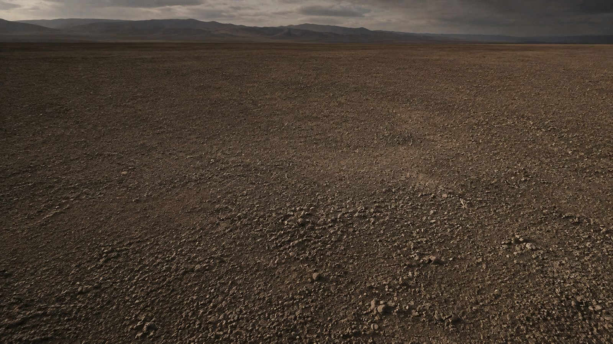
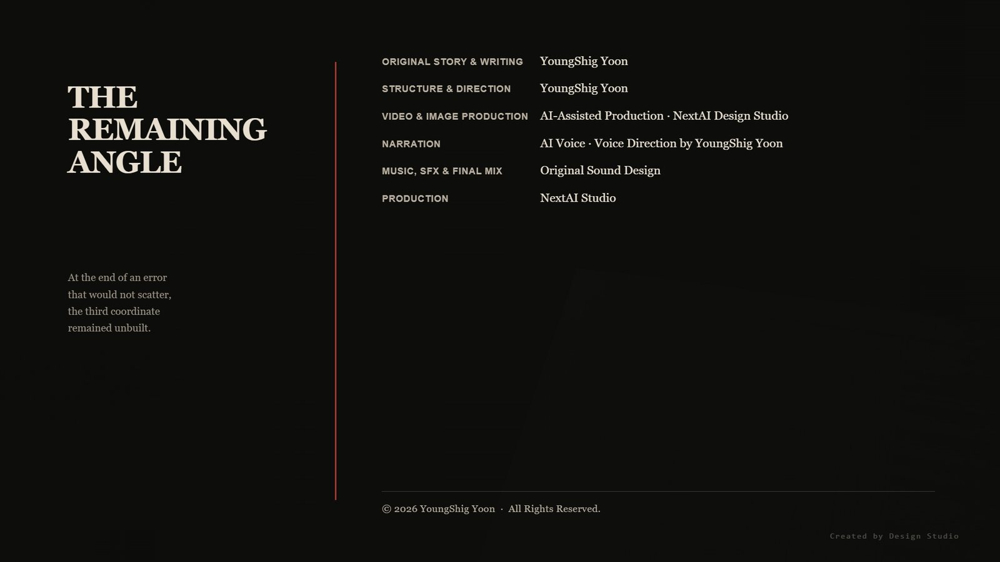

I. Error

My job is to measure.
The official term is cultural-heritage surveying. Other people excavate. Still others interpret. I produce only coordinates, azimuths, and dimensions. What a ruin means is not my concern. Put such a thing in a report and the report comes back rejected. You have written down what you did not measure.
There is an order to things in the field. Spread the tripod. Adjust the length of the legs. Check the level. The bubble must enter the center. Nothing begins before it does. Getting the bubble into the center takes half the day's work.
I have done this for fourteen years. You could say I have lived with error for fourteen years.
Error has a nature. It scatters. Measure the same thing ten times and you get ten values, dispersed around some center. My job is to find that center.
Last year, at one site, it did not happen.
The azimuth was off. That is common. The ground shifts beneath old structures and their axes turn. But this discrepancy did not scatter. Measure it ten times and all ten readings leaned the same way by the same amount.
0.4 degrees.
An error that does not scatter is not an error. It is a value.
I suspected the instrument. I brought in another. The result was the same. I suspected the control point. I obtained the national control data again and recalculated. The result was the same. Last, I suspected myself. I had someone else take the measurement. The result was the same.
Then that was how the ruin stood. It had been built at that angle from the beginning.
The problem was that the angle pointed to nothing.
II. Another Sky

There is a calculation we use in such cases.
Earth's axis turns slowly, completing a cycle in roughly twenty-six thousand years. When an ancient structure does not align with today's sky, we wind time backward and restore the sky that existed when it was built. If the structure was raised by the stars, it will fall into place beneath that earlier sky.
This is not my field. It belongs to archaeoastronomers. I tried it only because I was curious.
It worked.
When I wound the sky back, the value locked into place. It entered the margin of error cleanly. Against the sky of that period, the structure stood with perfect accuracy.
But there was nothing where the angle pointed.
I do not mean there was no star. The position itself did not exist in the sky. Plot that azimuth and elevation, and the line descends below the horizon. It was pointing underground.
I held on to that result for several days. I performed the calculation three more times. The result was the same.
If it pointed to nothing in the sky, what did it point to? The question lay outside my work. I was not someone permitted to ask it. But I already had.
III. Triangle

Our profession has accumulated a great deal of data. Each country publishes survey records: coordinates, azimuths, and dimensions of ancient sites. Numbers without interpretation. Hardly anyone looks at them. There is no reason to.
I downloaded them. From every continent. I placed structures of different forms, periods, and materials into a single table. I erased everything but their azimuths.
Some alignments matched. The sites lay on opposite sides of the planet and had been built thousands of years apart, yet the values were the same.
I drew those values as lines on a map.
The lines went toward one another.
To explain what that means, I have to take a step back. The azimuth of a ruin usually points to something in the sky: where the sun rises, where a star rises. The values therefore point in different directions when the locations differ.
These did not. Lay each value down along Earth's surface and it arrived at the position of another ruin. Each pointed to the other.
Two points were fixed.
And once two points are fixed, the coordinates of a third can be calculated. I made that calculation. It did not take long. It is one of the most basic calculations in my work.
When the numbers appeared, I decided not to tell anyone.
There was no language in which to tell it. The only language I possessed was made of coordinates and angles, and that language could not say this. I would have to borrow another language. The instant I used it, I would cease to be the person who measures.
IV. Two Hands

The ruins that shared the alignment divided into two groups.
The first group had a standard.
The base unit was the same across continents. Wall thickness, story height, corner angle: the values repeated. Their deviations were minute, on a scale no structure raised by human hands could produce. I say this as someone who has spent fourteen years measuring what human beings have built.
The structure always had three layers.
The outer shell established the bearing. That was where the angle came from. The middle layer carried the load. Inside remained an empty space.
The empty space was strange.
It was not sized for a human being. It was much larger. There was either no way in, or the entrance showed signs of having been opened later by other hands. The space had not been made to be entered. It had been made to remain empty.
Most of it can be explained if the structure was built as a place where something was meant to appear. Other explanations do not work very well.
Some chambers had scorch marks on their walls.
They were not the traces of a fire. Soot had not accumulated; the surface itself had transformed all at once. Something intensely hot had passed through in an instant. Later people had entered and lit fires, but those traces lay separately on top and were easy to distinguish.
I counted the scorched chambers and the clean ones.
Of the nineteen sites for which I secured records, three were scorched.
Sixteen were clean. They had been built and never used.
This is how I came to read the differences in their scale.
To establish the first location, they would have had to work without a marker. To set a marker, you must already be there, but for the first journey there was no marker to travel to. There is no knowing what happened at that first site, but I doubt it succeeded in a single attempt.
The greatest ruin may mark the place where the most was lost. Its size may measure not achievement, but loss. Read that way, the distribution of scale makes sense. I have found no other reading that does.
The second group had no buildings.
A few stones formed a circle, or there was a single marker. Nothing more. What they made was crude. Materials varied and the workmanship was rough.
But the locations were exact.
These were traces left by those for whom what was built did not matter, only where it was placed.
The sites always lay at a fixed distance from the ruins of the first group. The variation was small. They were neither close nor far. They seemed to want to remain beside the others without touching them.
And every site stood where human beings could not live. There was no water, the wind was fierce, and winter lasted a long time. Someone had gone out of their way to leave markers in such places.
Either those conditions did not trouble them, or those conditions were necessary.
In my notes I called the two groups two hands. I did not use the word species. I had no grounds for it.
V. The Body

The first group yields dimensions.
The width of stairs, the height of passages, the spacing of grooves cut into walls: from measurements like these a body can be reconstructed. It is common work in our field.
The body was larger than a human being.
That was not what surprised me. The surprise lay elsewhere.
There was no individual variation.
The dimensions were the same in ruins from different continents and different periods. Not merely similar. Almost perfectly identical. This does not happen in human architecture. People build for their own bodies, and human bodies differ. The height of a stair always scatters by the length of the legs of people in that time and place.
This did not scatter.
No individual variation may mean they were not born. Things that are born scatter. Only things that are made become identical.
I think I can also see why they had to be identical.
To appear inside an empty chamber, a body would have had to disperse and gather again. If the scorching is the trace of that process, then this follows. Individual variation would be a cause of failure in anything that came apart and reassembled. There would have to be one standard form for it to gather into again.
If so, they stopped being individuals so that they could travel.
That may also be why none of the passages curved. I checked all nineteen sites. There was not a single curve. Everything was either a straight line or a precise angle. In a human building there is always somewhere the course changes: a place created when someone changed their mind during construction, or when those who came later thought differently from those who came before.
When bodies are the same, judgments are the same. They had left no place of hesitation.
The second group yields no dimensions. There are no stairs or passages from which to reconstruct anything.
There is only one thing.
A certain mineral was found at their sites. It is an ordinary stone. Its composition is common. The specimens sit in museum storage labeled unclassified, and no one has studied them. There is nothing about them to study.
There are always two.
That was what first caught my eye. Never one. Never three. Always a pair. I checked the excavation records from all six sites. There were no exceptions.
Their surfaces are worn. The marks were made by being held in a hand. The shape of the worn areas reveals the size of that hand.
It was almost human.
Not the hand of the larger, standardized group. This hand was like ours.
I measured the depth of the wear. It is possible to calculate how long a mineral of this hardness must be held in a human hand to wear down that far. One person would have to hold it for a lifetime.
Each pair contained a lifetime.
Then I noticed one last thing.
I compared measurement records for two specimens recovered on different continents. Different people had measured them at different times. The surveyors had never known one another.
There was a minute fluctuation. The value shifted slightly with every measurement, the kind of movement normally dismissed as instrument noise.
The fluctuations were identical.
They carried no meaning. They followed no pattern. They were random. Only, the two randomnesses were the same.
I could write this nowhere. The sentence random values coincide asserts nothing. A sentence that asserts nothing cannot be refuted, either. It is simply given no place at all.
VI. Two Deficiencies

Looking for an interpretation, I turned to old texts. They were outside my field, so it took a long time.
Ancient stories from many parts of the world describe two groups. Their names are all different. The division of their roles is the same: those who build and those who see.
The stories of conflict appear in later layers. In the oldest layers, the two do not fight. They work together. The builder asks for the place. The seer determines it. The sequence repeats.
By then I could make out the relationship between the two groups.
The builders must have been able to calculate where to go. But they could not have known what that place was like at that moment. However exact a calculation may be, it is made from what has already passed.
The seers must have known what the place was like at that moment. But they could not go there.
Seeing must have carried a price. Perhaps it required the absence of every other signal. That may be why they went where there was no water and only wind. They had to be alone, and they had to remain for a long time, unable to do anything else. The depth of the wear is the measure of that time.
And the ability must have differed from one individual to another. If they became identical, perhaps they could no longer see. They could not standardize themselves, and they could not increase their number.
One side stopped being individual and gained the power to travel. The other remained individual and lost the power to go.
Each was what the other lacked.
But there was no way to verify the collaboration.
The builders could know that the seers were right only if they emerged safely. If they did not emerge, no one could know why. The calculation may have been wrong. The seeing may have been wrong. There may have been nothing there to see in the first place. Failure always arrived in the same form: no one came out.
There were sixteen clean chambers.
The failures accumulated, and there was no way to assign responsibility. What happened next was not left here.
Only the stratigraphy remains. At several sites, the work of one group stops at a certain point, and another layer appears where the other group built over it.
No one fought here. One side simply stopped coming.
VII. The Third Point

I went to the calculated coordinates.
I had no grounds on which to request authorization, so I went on my own time. It took two days to arrive.
There was nothing there.
The terrain showed no anomaly. I had no equipment for a geophysical survey, but even if I had, there seemed to be nothing it could find. There was no trace of earth having been cleared, no trace of stone having been moved. It was a place human hands had never touched.
It had not been built.
When I returned, I went through the records of both groups again. Then I saw that every site was the same. Not one had been finished. There was always a face left incomplete, a corner abandoned midway through dressing, a layer where the stacking had stopped. I had classified them as later damage. They were not damage. The work had never been completed.
The side that was meant to come and place the final marker must not have come. There is no way to know which side that was.
I can tell what should have been placed there. One empty chamber and a pair of minerals. It must have been the place where the two hands were to work together one last time.
I spread my tripod on that ground.
There was nothing to measure, but I spread it anyway. I adjusted the legs and checked the level. The bubble took longer than usual to enter the center. The ground was uneven.
The bubble entered the center. And I measured nothing.
I wrote my report. Only azimuths, coordinates, and dimensions: survey values from nineteen sites; measurements of excavated minerals from six sites; the number of scorched chambers and clean ones. That was all.
I did not write the interpretation. Not because I could not, but because no one would read it. Add even one sentence like that to data like these and, from then on, the numbers are discarded with it.
I placed the coordinates of the third point in an appendix. I offered no explanation. I did not say how the values had been obtained.
Viewed as numbers alone, they mean nothing. They are merely the coordinates of empty ground.
Only someone who performs the calculation will know.
I wrote down only the coordinates.
